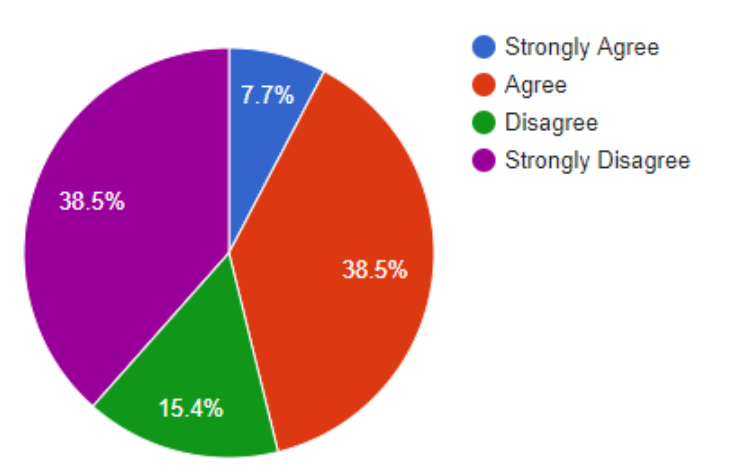
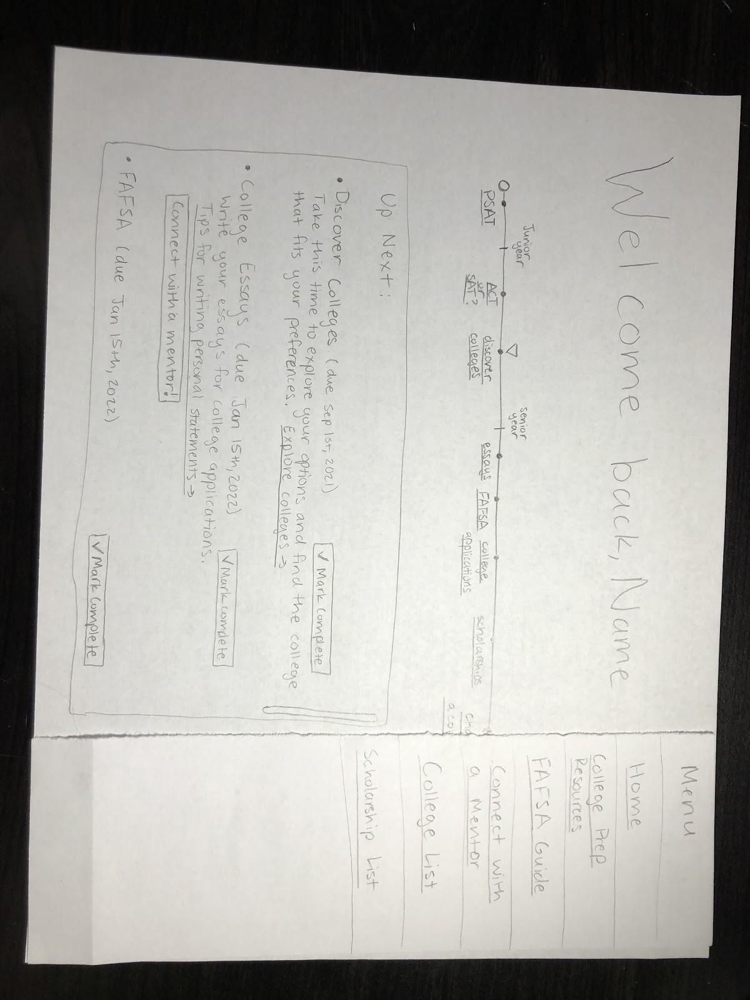
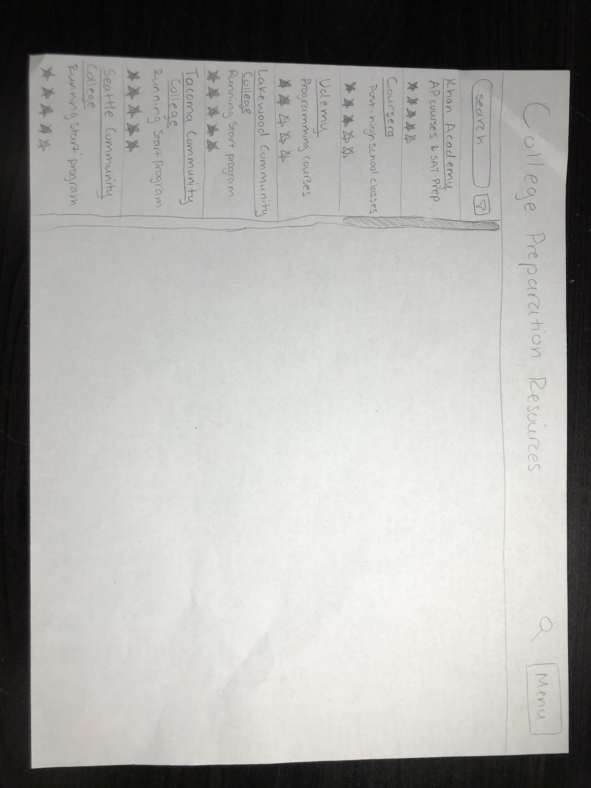
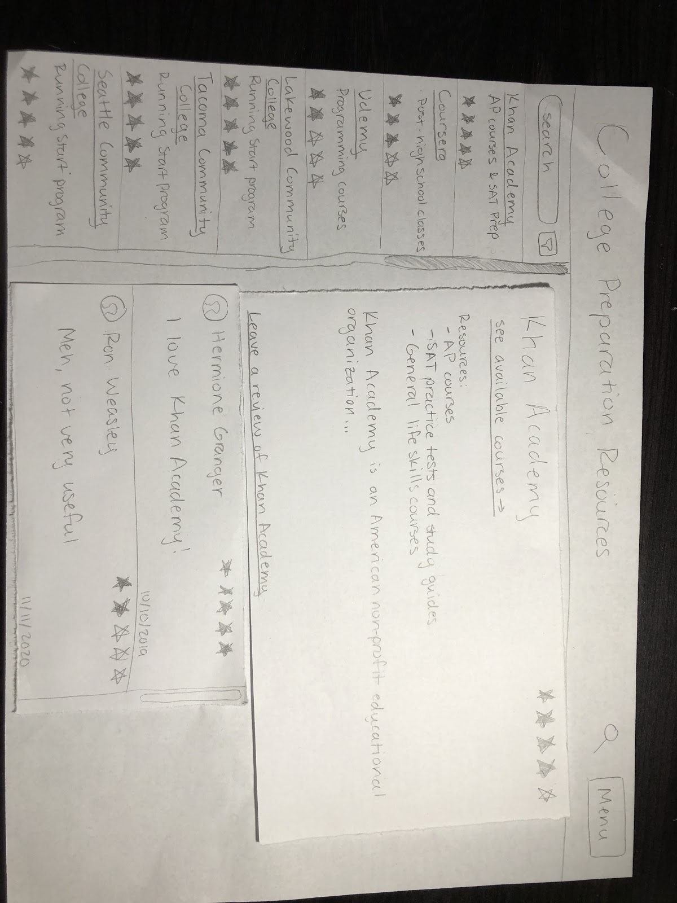
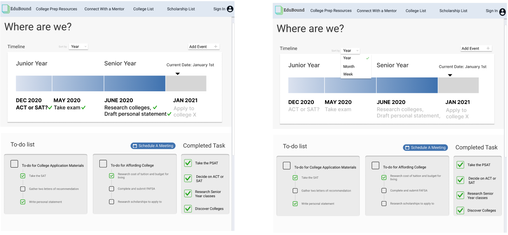

EduBound
January 2021 - Education Web Application
Task
To help first-generation students during the college application process and aid their transition to post-secondary education
Context
- CSE 440 class project in a team
- 10 weeks
Problem Space
The college application process is a daunting task for most high school students, but even more so for first-generation students. Many first-gen students lack outside support and do not have access to substantial college planning resources. Resources that first-gen students do have access to are usually from their high school like counselors, but the quality of these resources can vary from school to school.
Existing digital solutions to this problem do exist in the form of online articles containing information to help first gen-students. However, these solutions can not provide any structured support. EduBound is an online web application that is meant to provide semi-structered support to first-generation students.
Key Skills
- User Research
- Storyboarding
- Paper Prototyping
- Usability Testing
- Figma Mockups
- Visual Design
User Research
To gain a better understanding of the problem space, our team sent out a survey to first-generation students at UW, and we received 13 responds. Some examples of the responses are below.
To gain a better understanding of the problem space, our team sent out a survey to first-generation students at UW, and we received 13 responses. Some examples of the responses are below.
To gain a better understanding of the problem space, our team sent out a survey to first-generation students at UW, and we received 13 responses. Some examples of the responses are below.
Do you feel like the AP/college level courses you took (if you took them) in high school prepared you for the coursework you have done in college? Why or why not?
- “No, most of my teachers didn’t put too much effort into the class or it was their first time teaching it so it wasn’t well organized. This led us, the students to be underprepared for the AP exam”
- “I think taking college level courses in high school prepared me to work more indepentently and attend office hours in college, but I don't think it prepared me for the difficulty of STEM classes at UW because I didn't take many STEM classes in high school.”
What 2 resources do you WISH YOU HAD while you were preparing for and applying to college? Why do you wish you had them?
- “Someone to walk me through how to do FAFSA / understand financial information such as grants, scholarships, and loans. I had to do this mostly by myself because my mom does not understand English very well.”
- “Having a support group of other first gen that have gone or going through the process of college, I think even though our classmates are maybe going through the same thing, it still doesn’t feel like support.”
To gain a better understanding of the problem space, our team sent out a survey to first-generation students at UW, and we received 13 responses. Some examples of the responses are below.
Do you feel like you had the necessary resources to do well on the ACT/SAT tests? Why or why not?
- "Not quite, I was taking a college level math class which was frankly a waste of time because the teacher would not teach (there was a total of 8 students) and would not make himself accessible for us to ask questions about the material so I was not confident on the math and science portion of it even though I liked math and science. I also found out that I could have the SAT fee waived so I had to ask my advisor for the code, which I feel should have been info she should have shared (many of my classmates never really found out)"
- "Not having taken them in the past or knowing people who had made it difficult when it came to studying. Knowing how to study for such standardized tests can vary and having study materials with instructions would serve to be helpful."
My high school advisor provided me with the resources to successfully apply to college

To gain a better understanding of the problem space, our team sent out a survey to first-generation students at UW, and we received 13 responses. Some examples of the responses are below.
Research Insights
Our team identified 3 overarching insights that could help us inform a design solution.
- First-generation college students reported that a lack of parental guidance made the college application process much more difficult.
- Impostor syndrome is incredibly common among first-generation students. Many of the students cited a lack of resources and support as the main cause of their feelings of impostor syndrome.
- Lack of support made important task, like the FAFSA, difficult to complete.
Design Principles
In response to these three insights, I formulated three principles to guide my process. An ideal design solution should:
- Be free of charge and hosted online to allow easy access from any digital device.
- Provide an additional layer of support by being a centralized source of information to supplment the mentorship of an advisor.
- Deliver key resources as well as estimated “due dates” ensuring first-generation students stay on track.
Storyboarding
Our team created storyboards of first generation students completing different task using our app. The task we used for our design are finding free college prep programs and finding a mentor.
To gain a better understanding of the problem space, our team sent out a survey to first-generation students at UW, and we received 13 responses. Some examples of the responses are below.
To gain a better understanding of the problem space, our team sent out a survey to first-generation students at UW, and we received 13 responses. Some examples of the responses are below.
First Storyboard Task


Second Storyboard Task

Paper Prototype
Our team produced a paper prototype for our design mockup to allow usability testing of a low-fidelity design.

Usability Testing
With our paper prototype completed, we were able to perform usability testing with participants that we were able to recruit. Below is an outline of a task that we performed as apart of our usability testing. The task involves the user finding a variety of college preparation resources.


The user can click on the “Menu” button at the top right to expand a menu with more options. If the user clicks “College Prep Resources,” they are taken to the next image.

The user can search and filter classes. If the user clicks on one of the results, they are taken to the next image. The page now provides a link to the resource as well as reviews from other users
Digital Mockup
Our team produced a digital prototype of a medium fidelity mockup of our design using figma. Our digital mockup included a landing page with personalized tracking, the ability to connect with a mentor, and finding college prep resources.

Connect With A Mentor Overview
The “Connect with a mentor” page allows a user to find mentors, such as advisors, tutors, and consolers, anytime during the college application process. This page is meant to be used if a student feels the need for more specialized help than the timeline feature is able to give. Users can also schedule meetings and message various mentors.

Find College Prep Resources Overview
The “College Preparation Resources” page displays a list of resources related to preparing for college-level academics, as well as studying subjects that may not be available at a student’s high school. This page is directly related to the “Find College Preparation Resources” task.

Future Ideation
Since we only had 10 weeks to work on this project, there are several iterations of ideation that are needed before the project could be acceptable. For future ideation we would like to spend more time on the visual time and iterating on our medium-fidelity mockup to higher-fidelity designs.